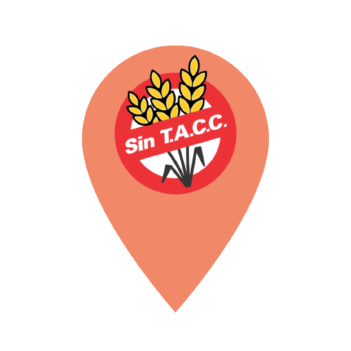

Estilo Natural
Almacén naturista, Dietética, Herboristeria, Cosmética vegetal, Velas, Sahumerios, Esencias naturales.
Ubicado en Calafate, (Av J A Roca 1330).
Podes conseguir variedad de productos sin tacc,
congelados y frescos.
Apto Calafate los provee de productos frescos como budines, bizcochitos, pan arabe (delicioso),
entre otros.
Seguilos en Instagram
El Bar Calafate
Es un Resto Bar - Waffleria ubicado en el centro de Calafate, (9 de Julio 57 Paseo de los Pájaros).
Tiene opciones sin gluten de platos salados y tambien opciones dulces,
cuenta con pan celiaco para opciones de sandwich.
Los chicos que atienden son muy amables, y el lugar es tranquilo y pintoresco.
Seguilos en Instagram
Apto Calafate
En Apto Calafate se elaboran productos sin gluten y sin lactosa.
Proveen a varios locales de Calafate, entre ellos, el que detalle más arriba, (Estilo Natural).
También realizan cursos online para cocina saludable.
Para conocer más, no te pierdas las novedades en las redes.
Seguilos en Instagram
La Destilería Food & Bar
En el centro de Calafate se encuentra La Destilería Food & Bar,
con opciones sin tacc de hamburguesas y Sandwich.
Esta ubicado en Av Libertador 935. Hacen Delivery y take away.
Seguilos en Instagram
Para enterarte de las novedades,
seguime en las redes


 Ingresa al mapa para conocer todos los lugares
© 2022 DeRutacc. Todos los derechos reservados.